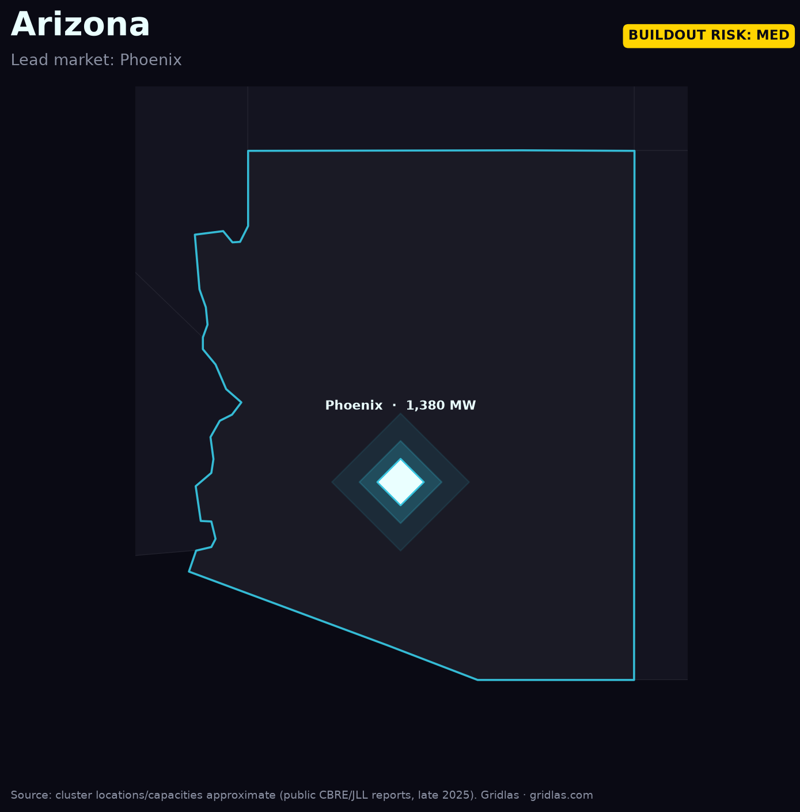

Home / Data centers by region / Phoenix, Arizona
A desert metro that became one of America's fastest-growing data-center hubs — and now contends with both grid and water limits.
Greater Phoenix has climbed into the top tier of U.S. data-center markets, with ~1,070 MW of inventory — the #4 U.S. market in CBRE's H1 2026 count — across 100+ facilities spanning Mesa, Chandler, Goodyear, and the West Valley. Cheap land, tax incentives, and low natural-disaster risk pulled hyperscalers in fast.

The constraint here is twofold: utilities APS and SRP face the same multi-year interconnection pressure as the rest of the country, and the desert adds a water dimension to cooling-heavy AI workloads. Both push new builds toward air-cooling and on-site generation deals.
Arizona is a leading indicator for Sun Belt growth: how it balances incentives, grid capacity, and water will shape whether the next wave of Western data-center demand lands here or routes to Texas and the Mountain West.
See the full ranking. The Gridlas report ranks every major U.S. metro by capacity and pipeline, with high-res maps — from public EIA, LBNL & ERCOT data.
Get the report →Need Phoenix in depth? A Market Power Brief covers one market and three you compete with, every figure cited. $850.
Prefer the free 3-page summary first? The 8 findings and the chart that explains the AI power crunch — straight to your inbox.
You’ll also get Power Watch, our free weekly digest of data-center power news, every Tuesday. No spam. Unsubscribe anytime.
Headlines from the past 30 days, updated Nov 4, 2026. Want these every week? The free summary signup below includes Power Watch, our Tuesday digest.
Phoenix has about 1,070 MW of inventory (CBRE, H1 2026), the #4 U.S. market, across 100+ facilities.
Even abundant land and sun don't remove the binding constraint — getting firm power on schedule.
Try the free power & water estimator on this market → · Share on X →